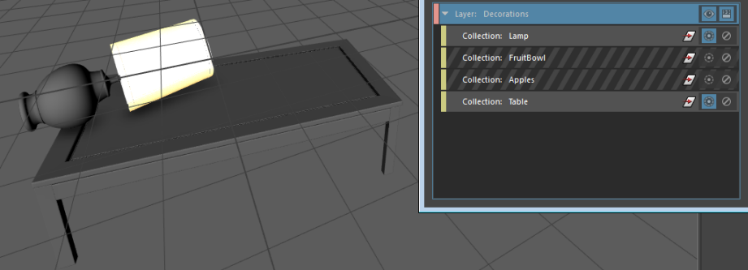
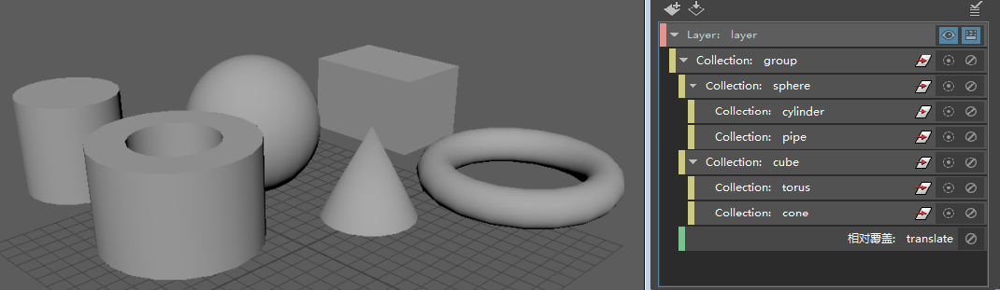
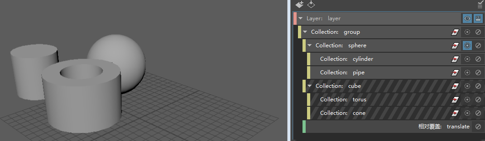
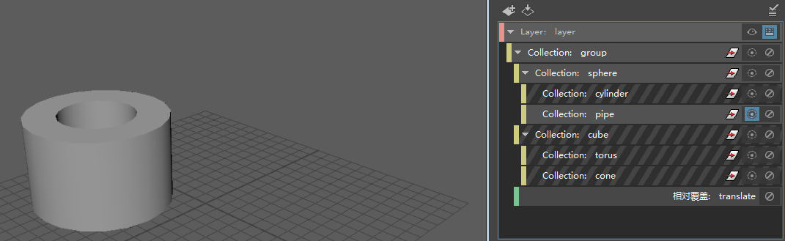

使用隔离选择有助于重点关注视口中已启用的一个或多个集合。
单击集合上的  可将其隔离。
可将其隔离。
如果渲染设置的平面结构不含子集合，那么只要在一个集合上单击 ，所有其他集合都将处于禁用状态，并且只有隔离选择的集合才会显示在视口中。隔离选定集合使用亮显的 图标来表示。若要了解有关“隔离选择”(Isolate Select)在层次集合中的行为的详细信息，请参见以下部分。
您可以隔离选择多个集合。单击其他集合上的 可隔离选择它们。如果未将任何集合设置为隔离选定对象，则已启用的所有集合均在视口中可见。
隔离选择仅影响视口，而不会影响批渲染。
若要禁用隔离选择，请再次单击 图标。
在本示例中，“灯”(Lamp)和“桌子”(Table)集合已设置为隔离选定对象并显示在视口中。

在层次集合中隔离选择
如果在包含层次集合的渲染设置中隔离选择父集合，则其所有子集合将保留启用状态，且其成员在层中保持可见。
在“隔离选择”(Isolate Select)之前：

在为球体集合启用“隔离选择”(Isolate Select)之后，圆柱体和管道子集合将保留启用状态，且其成员在视口中可见。

如果在包含层次集合的渲染设置中隔离选择子集合，则父集合将处于启用状态，但其成员对象不会影响渲染层。
在本示例中，当您隔离选择管道集合时，只有管道会显示在视口中。球体父集合保持启用状态，但其中所含的球体不会显示在视口中。这允许父集合上的覆盖（在本例中，是指应用于组集合的“平移”(Translate)覆盖）继续应用于管道集合。
在为管道集合启用“隔离选择”(Isolate Select)之后：
